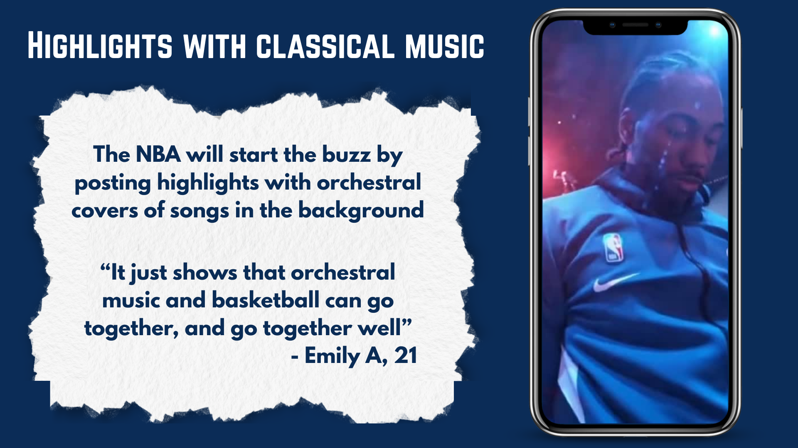
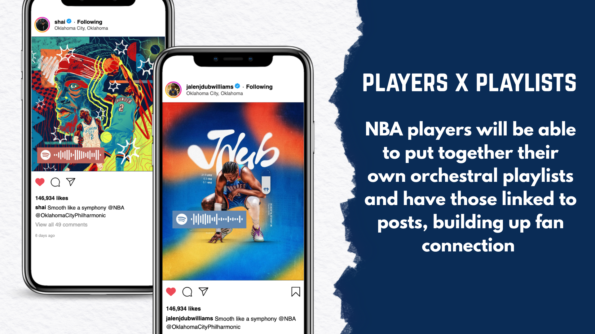
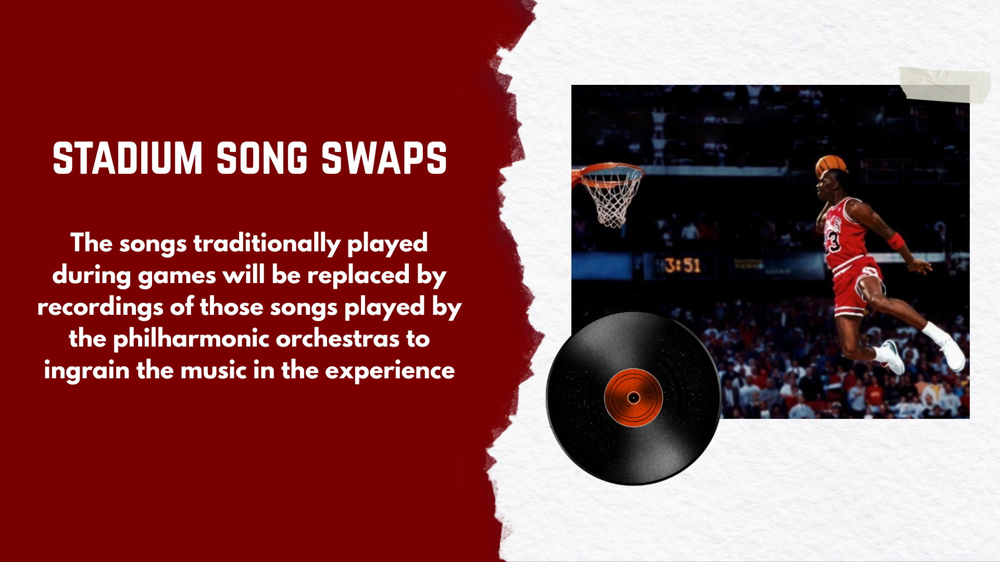
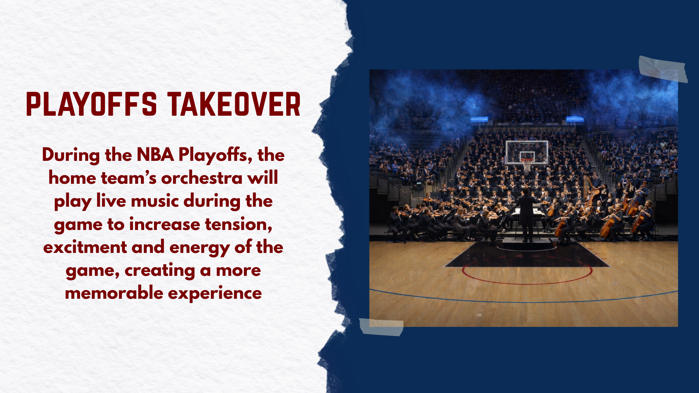

What It Solves
It increases perceived value by making the paid NBA experience feel more premium, emotional, and culturally memorable.
Title Wall
NBA | 2026 | Spec Collab
Strategy Plaque




Fan access to NBA games online is becoming more complicated and expensive. Ratings have declined even as league revenue, team valuations, and player salaries continue to grow.
The issue is not that fans stopped loving basketball. The issue is that watching legally feels increasingly difficult, fragmented, and expensive.
The NBA is facing a period of viewership decline while its streaming ecosystem becomes more complicated.
To watch all of a favorite team's games, fans may need access to five different streaming platforms, costing around $600 total.
That system may create revenue for the league and players, but it hurts the fan experience.
Ratings are declining while the league keeps growing financially. Watching legally is too expensive and confusing. Younger fans are opting out, but Gen Z will pay when the experience feels better, more emotional, and more premium.
Orchestral music creates a cinematic layer that can make NBA games feel dramatic, high-production, and culturally memorable while bringing renewed support to local orchestras.
NBA Opportunity
If fans are being asked to pay a premium price, the NBA needs to create a premium feeling around the viewing experience. Philharmonic orchestras create an emotional, cinematic, and high-production layer that makes games feel bigger than a broadcast.
What It Solves
It increases perceived value by making the paid NBA experience feel more premium, emotional, and culturally memorable.
What It Doesn’t
It does not solve the literal cost of watching games. It makes the price feel less hollow by adding a richer layer to what fans receive.
Watching the NBA legally does not feel worth the hassle when the league demands a royal price to watch its content but does not provide a royal experience.
Strategy
Partner NBA teams with local philharmonic orchestras to make games feel more cinematic, dramatic, and premium, rebuilding the perceived value of watching legally.
Big Idea
NBA x Philharmonic Orchestra. The NBA brings the game. The orchestra brings the drama.
NBA teams will partner with their local philharmonic orchestras to bring an orchestral vibe to already popular music.
They will collaborate across creative executions to provide personal touches to each team's content and make the game feel more emotional, premium, and culturally memorable.
Fan Keepsake
Fans can scan a QR code on their admission ticket for access to a playlist of the orchestral songs featured at the game.
The idea does not ask fans to suddenly care about orchestras. It uses orchestral music as a familiar entertainment signal: drama, stakes, prestige, and emotion. That makes the NBA feel more cinematic while giving local orchestras a fresh cultural stage.
It just shows that orchestral music and basketball can go together, and go together well.